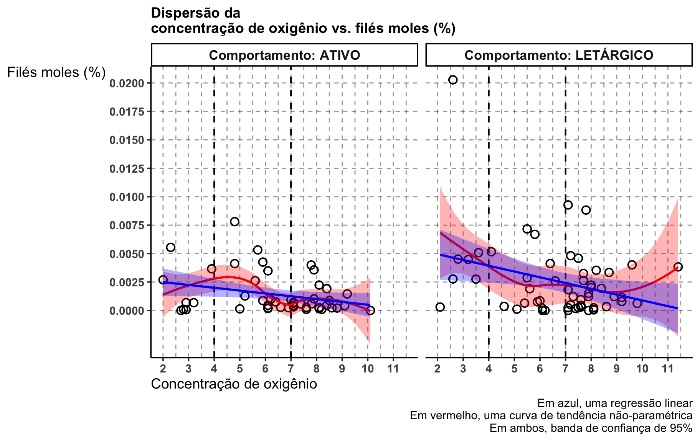

first_quant e third_quant representam respectivamente o 1o e 3o quartis, isto é, os pontos que separam o percentual de filé mole em 25%/75% e 75%/25%. std_deviation é o desvio-padrão em relação a média.
Abaixo, um gráfico de dispersão.
Code
dat |>ggplot() +aes(x = od_chegada, y = percent_moles) +geom_vline(xintercept =seq(2, 11.5, by =0.5), linetype ="dashed", alpha =0.4 ) +geom_vline(xintercept =c(4, 7), linetype ="dashed", linewidth =0.75 ) +geom_hline(yintercept =seq(0, 0.02, by =0.0025), linetype ="dashed", alpha =0.4 ) +geom_point(shape =1, size =3, stroke =1) +geom_smooth(method ="loess", se =TRUE, color ="red", fill ="red", alpha =0.3 ) +geom_smooth(method ="lm", se =TRUE, color ="blue", fill ="blue", alpha =0.3 ) +scale_x_continuous(breaks =2:11) +scale_y_continuous(breaks =seq(0, 0.02, by =0.0025)) +labs(x ="Concentração de oxigênio", y ="Filés moles (%)",title ="Dispersão da\nconcentração de oxigênio vs. filés moles (%)",caption =paste0("Em azul, uma regressão linear\n","Em vermelho, uma curva de tendência não-paramétrica\n","Em ambos, banda de confiança de 95%" ) )
Mesmo gráfico, mas separando por comportamento.
Code
dat |>ggplot() +aes(x = od_chegada, y = percent_moles) +geom_vline(xintercept =seq(2, 11.5, by =0.5), linetype ="dashed", alpha =0.4 ) +geom_vline(xintercept =c(4, 7), linetype ="dashed", linewidth =0.75 ) +geom_hline(yintercept =seq(0, 0.02, by =0.0025), linetype ="dashed", alpha =0.4 ) +geom_point(shape =1, size =3, stroke =1) +geom_smooth(method ="loess", se =TRUE, color ="red", fill ="red", alpha =0.3 ) +geom_smooth(method ="lm", se =TRUE, color ="blue", fill ="blue", alpha =0.3 ) +facet_grid(~ comportamento,labeller = ggplot2::labeller(comportamento = \(x) paste("Comportamento:", x) ) ) +scale_x_continuous(breaks =2:11) +scale_y_continuous(breaks =seq(0, 0.02, by =0.0025)) +labs(x ="Concentração de oxigênio", y ="Filés moles (%)",title ="Dispersão da\nconcentração de oxigênio vs. filés moles (%)",caption =paste0("Em azul, uma regressão linear\n","Em vermelho, uma curva de tendência não-paramétrica\n","Em ambos, banda de confiança de 95%" ) )

Através do ajuste de um modelo de regressão linear (Montgomery, et al., 2012; Gomes, 2009) vemos um efeito significativo (valor-p de 0.0077), indicando associação negativa entre as variáveis.
Ao acréscimo de cada unidade de concentração de oxigênio, se estima um decréscimo percentual de 0.0004 no filé mole (lembrando, 0.01 é 1%), com um intervalo de 95% de confiança de [-0.0006, -0.0001].
Por curiosidade, ajustamos também um modelo acrescentando o efeito de comportamento. Com mais tal variável no modelo, a concentração de oxigênio ainda é estatisticamente significativa. Já o comportamento também o é (valor-p de 0.0152), indicando que se espera um percentual de filé mole 0.0013 maior para um comportamento letárgico comparado com um comportamento ativo.
Para verificar se existe diferença estatisticamente significativa entre os grupos, foi ajustado um outro modelo linear mas agora com uma variável categórica indicando o grupo (controle, tratamento 1 e tratamento 2).
Após tal ajuste performamos uma Análise de Variância (ANOVA) (Montgomery, 2017; Gomes, 2009) que indicou que existe uma diferença estatisticamente significativa entre as médias de percentual de filé mole entre os grupos de concentração de oxigênio, valor-p de 0.0374.
Code
model3 <-lm(percent_moles ~ grupo, data = dat)anova(model3) |> kableExtra::kbl(digits =4)
Df
Sum Sq
Mean Sq
F value
Pr(>F)
grupo
2
0e+00
0
3.3942
0.0374
Residuals
102
7e-04
0
NA
NA
Portanto, performamos comparações múltiplas (Lenth, 2021; Hothorn et al., 2008) com ajuste de Tukey que indicou haver diferença estatisticamente significativa apenas entre os tratamentos 1 e 2, com diferença média de 0.002 de filé mole percentual e com valor-p de 0.0285.
Também por curiosidade, testamos a associação entre a concentração de oxigênio e a densidade (kg) do lote.
Existe uma associação positiva muito próxima de ser estatisticamente significativa, valor-p de 0.067. Se estima que no acréscimo de cada unidade na concentração de oxigênio se espera que o lote seja 113.7 kg mais pesado.
Code
dat |>ggplot() +aes(x = od_chegada, y = densidade_kg_lote) +geom_vline(xintercept =seq(2, 11.5, by =0.5), linetype ="dashed", alpha =0.4 ) +geom_vline(xintercept =c(4, 7), linetype ="dashed", linewidth =0.75 ) +geom_hline(yintercept =seq(1500, 9e3, by =500), linetype ="dashed", alpha =0.4 ) +geom_point(shape =1, size =3, stroke =1) +geom_smooth(method ="loess", se =TRUE, color ="red", fill ="red", alpha =0.3 ) +geom_smooth(method ="lm", se =TRUE, color ="blue", fill ="blue", alpha =0.3 ) +scale_x_continuous(breaks =2:11) +scale_y_continuous(breaks =seq(2e3, 9e3, by =1e3)) +labs(x ="Concentração de oxigênio", y ="Densidade (kg)",title =paste0("Dispersão da\nconcentração de oxigênio vs. densidade (kg) do lote" ),caption =paste0("Em azul, uma regressão linear\n","Em vermelho, uma curva de tendência não-paramétrica\n","Em ambos, banda de confiança de 95%" ) )
Fizemos o mesmo para a densidade do lote e o percentual de filé mole.
COmo o gráfico já indica, não existe sinais de uma associação. Ou seja, estatisticamente, independente da densidade do lote se espera o mesmo percentual de filé mole.
Code
dat |>ggplot() +aes(x = densidade_kg_lote, y = percent_moles) +geom_vline(xintercept =seq(1500, 9e3, by =500), linetype ="dashed", alpha =0.4 ) +geom_hline(yintercept =seq(0, 0.02, by =0.0025), linetype ="dashed", alpha =0.4 ) +geom_point(shape =1, size =3, stroke =1) +geom_smooth(method ="loess", se =FALSE, color ="red", fill ="red", alpha =0.3 ) +geom_smooth(method ="lm", se =TRUE, color ="blue", fill ="blue", alpha =0.3 ) +scale_x_continuous(breaks =seq(1500, 9e3, by =1e3)) +scale_y_continuous(breaks =seq(0, 0.02, by =0.0025)) +labs(x ="Densidade (kg) do lote", y ="Filés moles (%)",title =paste0("Dispersão da\ndensidade (kg) do lote vs. filés moles (%)" ),caption =paste0("Em azul, uma regressão linear com banda de confiança de 95%\n","Em vermelho, uma curva de tendência não-paramétrica" ) )
A análise estatística foi desenvolvida na linguagem e ambiente para computação estatística R (R Core Team, 2025).
Os principais pacotes/bibliotecas R utilizadas aqui foram ggplot2 (Wickham et al., 2024), janitor(Firke, 2023), dplyr(Wickham et al., 2023), broom (Robinson et al., 2023) e emmeans(Lenth, 2021).
Montgomery, D. C., Peck, E. A., & Vining, G. G. (2012). Introduction to Linear Regression Analysis (5th ed.). Wiley.
Gomes, F. P. (2009). Curso de Estatística Experimental (15ª ed.). Piracicaba: FEALQ.
Montgomery, D. C. (2017). Design and Analysis of Experiments (9th ed.). Wiley.
Hothorn, T., Bretz, F., & Westfall, P. (2008). Simultaneous inference in general parametric models. Biometrical Journal, 50(3), 346–363. https://doi.org/10.1002/bimj.200810425
R Core Team (2025). R: A Language and Environment for Statistical Computing. R Foundation for Statistical Computing, Vienna, Austria. https://www.R-project.org/.
Wickham, H., Chang, W., Henry, L., Pedersen, T. L., Takahashi, K., Wilke, C., Woo, K., & Yutani, H. (2024). ggplot2: Create Elegant Data Visualisations Using the Grammar of Graphics (Version 3.5.1). R package. Disponível em: https://CRAN.R-project.org/package=ggplot2
Wickham, H., François, R., Henry, L., Müller, K., & Vaughan, D. (2023). dplyr: A Grammar of Data Manipulation (Version 1.1.4). R package. Disponível em: https://CRAN.R-project.org/package=dplyr
Robinson, D., Hayes, A., Couch, S., & Rundel, C. (2023). broom: Convert Statistical Objects into Tidy Tibbles (Version 1.0.5). R package. Disponível em: https://CRAN.R-project.org/package=broom